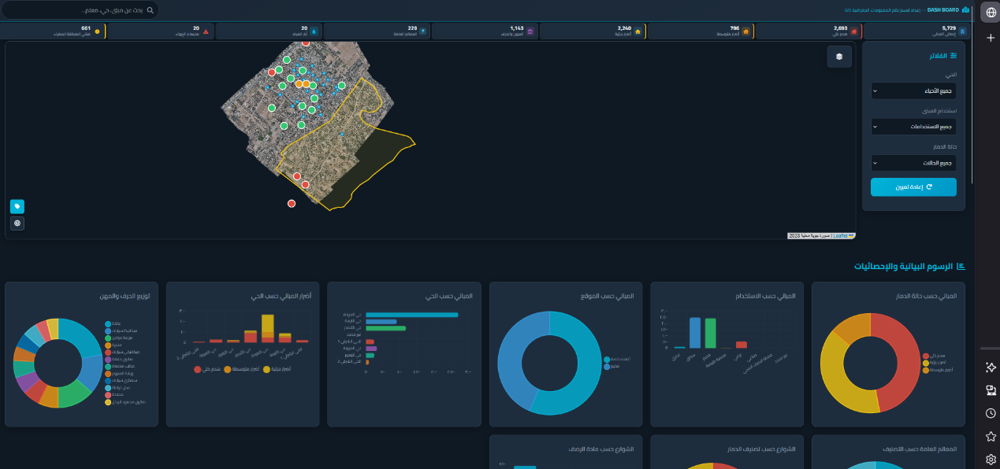
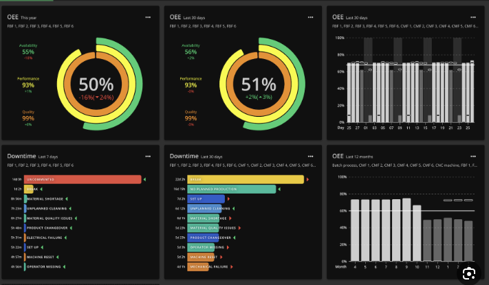

Municipal GIS Dashboard
Turning scattered municipal data into an executive Web GIS dashboard.
Built for decision-makers who need searchable assets, operational indicators, printable reports, and a single spatial reference for daily municipal work.
Problem
Municipal information was distributed across disconnected tables, paper notes, legacy GIS layers, and field teams. This slowed reporting, field verification, service monitoring, and management decisions.
My Role
Prepared a public-safe spatial database, cleaned and organized layers, linked attributes to locations, and shaped the data into a dashboard workflow for technical teams and senior management.
Workflow
- Audit available municipal layers and identify duplicate or incomplete records.
- Clean geometry and attributes, then standardize layer names and categories.
- Build searchable layers for houses, activities, services, and infrastructure.
- Design Web GIS views with KPIs, filters, and printable reporting patterns.
- Prepare a public portfolio version with sensitive details removed.
Results / Impact
5,629houses spatially linked
1,100+activities documented
63 kmwastewater network mapped
Visual Proof

